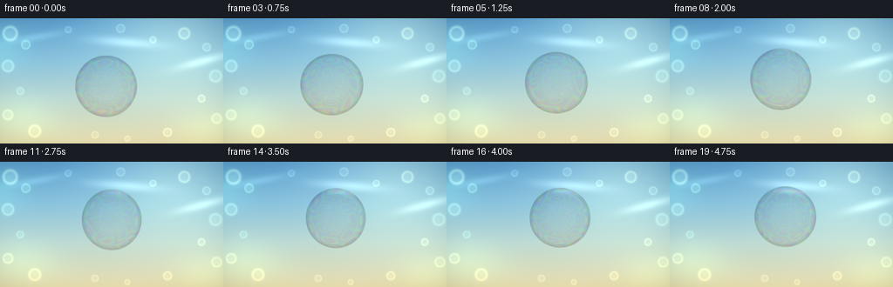
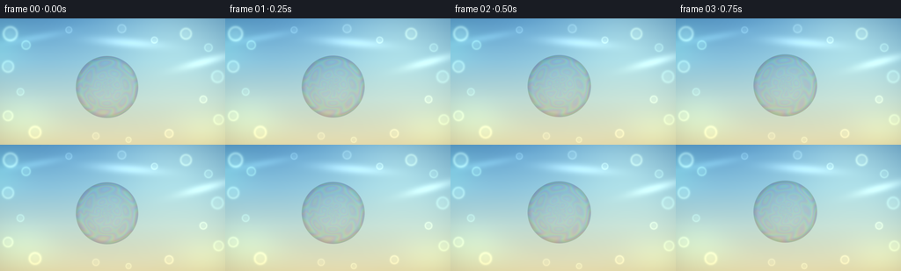

CODING AGENTS AS PIXEL WORLD MODELS
traex/DeepSeek-V4.1-Flash · phygen_082
点击播放 · 原生 RGB 像素
逐轮保存的候选
回放视频、检查图与代码变化。
每份候选均可单独播放。实际图片检查记录在下方工具轨迹中。
候选 01播放与检查图
点击播放 · 原生 RGB 像素


展开代码变化
--- 上一保存版本
+++ 本次保存版本
@@ -0,0 +1,317 @@
+"""Procedurally render a soap bubble drifting through warm afternoon light."""
+
+from pathlib import Path
+
+import numpy as np
+from PIL import Image, ImageFilter
+
+import artifact_io
+
+
+WIDTH = 256
+HEIGHT = 144
+FRAMES = 20
+FPS = 4.0
+SS = 3 # Render large, then downsample for clean curved edges.
+
+
+def smoothstep(edge0, edge1, values):
+ x = np.clip((values - edge0) / (edge1 - edge0), 0.0, 1.0)
+ return x * x * (3.0 - 2.0 * x)
+
+
+def add_ellipse_glow(image, cx, cy, rx, ry, color, strength, angle=0.0):
+ """Add a soft rotated elliptical light to a float RGB image."""
+ h, w = image.shape[:2]
+ y, x = np.mgrid[:h, :w].astype(np.float32)
+ ca, sa = np.cos(angle), np.sin(angle)
+ dx, dy = x - cx, y - cy
+ ex = (ca * dx + sa * dy) / rx
+ ey = (-sa * dx + ca * dy) / ry
+ glow = np.exp(-2.2 * (ex * ex + ey * ey)).astype(np.float32)
+ image += glow[..., None] * np.asarray(color, dtype=np.float32) * strength
+
+
+def add_bokeh(image, cx, cy, radius, color, strength, ring=True):
+ """Add a softly defocused circular highlight."""
+ h, w = image.shape[:2]
+ x0 = max(0, int(cx - radius * 1.7))
+ x1 = min(w, int(cx + radius * 1.7) + 1)
+ y0 = max(0, int(cy - radius * 1.7))
+ y1 = min(h, int(cy + radius * 1.7) + 1)
+ if x0 >= x1 or y0 >= y1:
+ return
+ y, x = np.mgrid[y0:y1, x0:x1].astype(np.float32)
+ dist = np.sqrt((x - cx) ** 2 + (y - cy) ** 2)
+ softness = max(1.2, radius * 0.10)
+ disc = 1.0 / (1.0 + np.exp((dist - radius) / softness))
+ profile = disc * 0.20
+ if ring:
+ profile += 0.80 * np.exp(-0.5 * ((dist - radius * 0.82) / (radius * 0.13)) ** 2)
+ profile += 0.22 * np.exp(-0.5 * (dist / (radius * 0.55)) ** 4)
+ else:
+ profile += 0.80 * np.exp(-0.5 * (dist / (radius * 0.55)) ** 2)
+ image[y0:y1, x0:x1] += (
+ profile[..., None] * np.asarray(color, dtype=np.float32) * strength
+ )
+
+
+def build_background():
+ w, h = WIDTH * SS, HEIGHT * SS
+ y, x = np.mgrid[:h, :w].astype(np.float32)
+ yn = y / max(1, h - 1)
+ xn = x / max(1, w - 1)
+
+ # A bright sky that turns into a sun-warmed, out-of-focus garden.
+ stops = np.asarray(
+ [
+ [0.00, 91.0, 158.0, 207.0],
+ [0.34, 137.0, 194.0, 220.0],
+ [0.64, 187.0, 216.0, 211.0],
+ [1.00, 231.0, 221.0, 175.0],
+ ],
+ dtype=np.float32,
+ )
+ bg = np.empty((h, w, 3), dtype=np.float32)
+ for channel in range(3):
+ bg[..., channel] = np.interp(yn, stops[:, 0], stops[:, channel + 1])
+
+ # Diffuse sunlight from the upper right.
+ sun_x, sun_y = w * 0.78, h * 0.06
+ dist = np.sqrt(((x - sun_x) / (w * 0.47)) ** 2 + ((y - sun_y) / (h * 0.74)) ** 2)
+ sunlight = np.exp(-2.1 * dist * dist).astype(np.float32)
+ bg += sunlight[..., None] * np.asarray([52.0, 42.0, 18.0], dtype=np.float32)
+
+ # Wide, nearly transparent cloud veils.
+ add_ellipse_glow(bg, w * 0.16, h * 0.15, w * 0.19, h * 0.045,
+ [120, 144, 129], 0.16, -0.18)
+ add_ellipse_glow(bg, w * 0.56, h * 0.19, w * 0.22, h * 0.055,
+ [244, 243, 220], 0.17, 0.08)
+ add_ellipse_glow(bg, w * 0.91, h * 0.34, w * 0.17, h * 0.050,
+ [255, 236, 190], 0.18, -0.26)
+
+ # Deep green foliage masses frame the scene without competing with the bubble.
+ add_ellipse_glow(bg, -w * 0.02, h * 0.23, w * 0.20, h * 0.28,
+ [37, 83, 58], 0.36, -0.30)
+ add_ellipse_glow(bg, w * 0.08, h * 0.82, w * 0.25, h * 0.28,
+ [55, 91, 50], 0.28, 0.14)
+ add_ellipse_glow(bg, w * 0.94, h * 0.88, w * 0.22, h * 0.26,
+ [89, 111, 53], 0.22, -0.12)
+
+ # Sunlit bokeh, arranged mostly around the central breathing room.
+ bokeh = [
+ (0.045, 0.12, 0.036, [255, 229, 145], 0.21),
+ (0.115, 0.21, 0.022, [183, 220, 132], 0.16),
+ (0.035, 0.38, 0.029, [232, 229, 157], 0.14),
+ (0.090, 0.58, 0.018, [126, 191, 158], 0.13),
+ (0.035, 0.77, 0.025, [218, 214, 132], 0.12),
+ (0.155, 0.90, 0.030, [249, 222, 128], 0.12),
+ (0.305, 0.09, 0.016, [235, 241, 206], 0.11),
+ (0.540, 0.08, 0.021, [246, 240, 190], 0.10),
+ (0.685, 0.17, 0.016, [255, 237, 163], 0.13),
+ (0.825, 0.12, 0.028, [255, 226, 125], 0.16),
+ (0.925, 0.23, 0.020, [201, 229, 161], 0.12),
+ (0.965, 0.46, 0.030, [158, 211, 170], 0.12),
+ (0.902, 0.64, 0.018, [242, 227, 146], 0.13),
+ (0.970, 0.80, 0.025, [183, 214, 132], 0.11),
+ (0.750, 0.91, 0.021, [255, 226, 146], 0.11),
+ (0.570, 0.96, 0.014, [209, 226, 151], 0.10),
+ (0.425, 0.93, 0.017, [246, 226, 155], 0.08),
+ ]
+ for bx, by, br, color, strength in bokeh:
+ add_bokeh(bg, bx * w, by * h, br * w, color, strength)
+
+ # Gentle chromatic variation gives the blurred garden more depth.
+ color_wash = (
+ 0.012 * np.sin(17.0 * xn + 9.0 * yn)
+ + 0.008 * np.sin(37.0 * xn - 13.0 * yn + 0.7)
+ ).astype(np.float32)
+ bg[..., 0] += color_wash * 12.0
+ bg[..., 1] += color_wash * 7.0
+ bg[..., 2] -= color_wash * 5.0
+
+ # A quiet vignette keeps the pale sky from flattening the image.
+ radial = np.sqrt(((xn - 0.50) / 0.68) ** 2 + ((yn - 0.52) / 0.72) ** 2)
+ vignette = 1.0 - 0.12 * smoothstep(0.52, 1.18, radial)
+ bg *= vignette[..., None]
+
+ return np.clip(bg, 0.0, 255.0).astype(np.float32)
+
+
+def bilinear_sample(image, xs, ys):
+ """Sample an HxWx3 image at floating-point coordinates."""
+ h, w = image.shape[:2]
+ xs = np.clip(xs, 0.0, w - 1.001)
+ ys = np.clip(ys, 0.0, h - 1.001)
+ x0 = np.floor(xs).astype(np.int32)
+ y0 = np.floor(ys).astype(np.int32)
+ x1 = np.minimum(x0 + 1, w - 1)
+ y1 = np.minimum(y0 + 1, h - 1)
+ wx = (xs - x0)[..., None]
+ wy = (ys - y0)[..., None]
+ top = image[y0, x0] * (1.0 - wx) + image[y0, x1] * wx
+ bottom = image[y1, x0] * (1.0 - wx) + image[y1, x1] * wx
+ return top * (1.0 - wy) + bottom * wy
+
+
+def render_bubble(frame_index, background, background_soft):
+ frame = background.copy()
+ t = frame_index / (FRAMES - 1)
+ phase = 2.0 * np.pi * t
+
+ # A slow, buoyant S-curve. Distances are authored in final-pixel units.
+ cx = (121.0 + 12.5 * t + 1.5 * np.sin(0.82 * phase + 0.35)) * SS
+ cy = (77.0 - 15.5 * t + 1.6 * np.sin(1.08 * phase + 0.70)) * SS
+ radius = (35.2 + 0.65 * np.sin(0.93 * phase + 0.45)) * SS
+ rx = radius * (1.0 + 0.012 * np.sin(1.31 * phase + 0.2))
+ ry = radius * (1.0 - 0.010 * np.sin(1.31 * phase + 0.2))
+
+ pad = int(radius * 1.18) + 4
+ x0 = max(0, int(cx) - pad)
+ x1 = min(WIDTH * SS, int(cx) + pad + 1)
+ y0 = max(0, int(cy) - pad)
+ y1 = min(HEIGHT * SS, int(cy) + pad + 1)
+
+ yy, xx = np.mgrid[y0:y1, x0:x1].astype(np.float32)
+ dx = xx - cx
+ dy = yy - cy
+ q = np.sqrt((dx / rx) ** 2 + (dy / ry) ** 2)
+ theta = np.arctan2(dy / ry, dx / rx)
+ q_safe = np.clip(q, 0.0, 1.0)
+ z = np.sqrt(np.maximum(0.0, 1.0 - q_safe * q_safe))
+
+ # Refraction: the background seen through the film is gently enlarged,
+ # with a sub-pixel split between color channels.
+ warp = 1.075 + 0.095 * q_safe ** 1.4
+ ux = dx / np.maximum(rx, 1.0)
+ uy = dy / np.maximum(ry, 1.0)
+ ca = 0.010 * radius
+ sample_x = cx + dx * warp + ca * ux * q_safe
+ sample_y = cy + dy * warp + ca * uy * q_safe
+ red = bilinear_sample(background_soft, sample_x, sample_y)[..., 0]
+ green = bilinear_sample(background_soft, sample_x, sample_y)[..., 1]
+ blue = bilinear_sample(background_soft, sample_x - ca * ux * q_safe,
+ sample_y - ca * uy * q_safe)[..., 2]
+ refracted = np.stack([red, green, blue], axis=-1)
+
+ # Interference colors follow a slowly flowing film-thickness field.
+ thickness = (
+ 0.50
+ + 0.145 * np.sin(2.45 * theta + 7.8 * q_safe - 3.2 * t)
+ + 0.085 * np.sin(4.9 * theta - 12.5 * q_safe + 2.4 * t + 0.4)
+ + 0.045 * np.cos(18.0 * q_safe + 1.7 * theta + 1.1 * t)
+ )
+ optical_phase = 35.0 * thickness + 3.2 * z + 0.9 * np.sin(3.0 * theta)
+ film = 0.5 + 0.5 * np.cos(
+ optical_phase[..., None] + np.asarray([0.0, 2.10, 4.20], dtype=np.float32)
+ )
+
+ edge_weight = 0.07 + 0.20 * smoothstep(0.35, 0.86, q_safe)
+ edge_weight += 0.37 * smoothstep(0.84, 0.985, q_safe)
+ film_tint = film * (0.45 + 0.55 * smoothstep(0.50, 0.98, q_safe))[..., None]
+ surface = refracted * (0.93 + 0.10 * film_tint)
+ surface = surface * (1.0 - 0.27 * edge_weight[..., None])
+ surface += film_tint * edge_weight[..., None] * 0.40
+
+ # A bright, slightly pearlescent circumference.
+ rim = np.exp(-0.5 * ((q - 0.982) / 0.018) ** 2)
+ inner_rim = np.exp(-0.5 * ((q - 0.918) / 0.055) ** 2)
+ rim_color = 0.76 + 0.24 * film
+ surface += rim[..., None] * rim_color * 0.68
+ surface += inner_rim[..., None] * (0.10 + 0.12 * film)
+
+ # Broad reflected sky in the upper left and a tiny sun glint above center.
+ lx = dx / rx
+ ly = dy / ry
+ broad_dx = (lx + 0.39) * np.cos(-0.36) - (ly + 0.43) * np.sin(-0.36)
+ broad_dy = (lx + 0.39) * np.sin(-0.36) + (ly + 0.43) * np.cos(-0.36)
+ broad_glint = np.exp(
+ -0.5 * ((broad_dx / 0.19) ** 2 + (broad_dy / 0.060) ** 2)
+ )
+ broad_glint *= smoothstep(1.00, 0.90, q)
+ small_glint = np.exp(
+ -0.5 * (((lx - 0.30) / 0.050) ** 2 + ((ly + 0.43) / 0.045) ** 2)
+ )
+ small_glint *= smoothstep(1.00, 0.90, q)
+ surface += broad_glint[..., None] * np.asarray([1.00, 0.98, 0.91]) * 1.15
+ surface += small_glint[..., None] * np.asarray([1.00, 0.97, 0.84]) * 0.95
+
+ # A faint green-gold reflection of the garden curls along the lower rim.
+ lower_reflection = (
+ np.exp(-0.5 * ((q - 0.86) / 0.070) ** 2)
+ * smoothstep(-0.10, 0.55, uy)
+ * (0.50 + 0.50 * np.cos(4.0 * theta + 0.8))
+ )
+ surface += lower_reflection[..., None] * np.asarray([0.26, 0.34, 0.18])
+
+ # Composite the bubble over the background with an antialiased silhouette.
+ alpha = 1.0 - smoothstep(0.986, 1.010, q)
+ alpha = alpha[..., None]
+ region_bg = frame[y0:y1, x0:x1]
+ composite = region_bg * (1.0 - alpha) + surface * alpha
+
+ # A very restrained iridescent halo sells the soap film against bright sky.
+ halo = np.exp(-0.5 * ((q - 1.035) / 0.033) ** 2)
+ halo *= (1.0 - alpha[..., 0])
+ composite += halo[..., None] * film * 0.09
+
+ frame[y0:y1, x0:x1] = np.clip(composite, 0.0, 255.0)
+ return frame
+
+
+def add_floating_particles(frame, frame_index):
+ """Add a few soft pollen motes so the air feels alive."""
+ h, w = frame.shape[:2]
+ t = frame_index / (FRAMES - 1)
+ rng = np.random.default_rng(1049)
+ count = 14
+ base_x = rng.uniform(0.08, 0.94, count)
+ base_y = rng.uniform(0.12, 0.90, count)
+ speeds = rng.uniform(0.35, 0.85, count)
+ sizes = rng.uniform(0.45, 1.25, count)
+ alphas = rng.uniform(0.10, 0.30, count)
+
+ yy, xx = np.mgrid[:h, :w].astype(np.float32)
+ for i in range(count):
+ px = (base_x[i] + 0.018 * t * speeds[i] + 0.006 * np.sin(2 * np.pi * t + i)) * w
+ py = (base_y[i] - 0.035 * t * speeds[i] + 0.008 * np.sin(2 * np.pi * 0.7 * t + i * 1.7)) * h
+ sigma = sizes[i] * SS
+ x0 = max(0, int(px - sigma * 4))
+ x1 = min(w, int(px + sigma * 4) + 1)
+ y0 = max(0, int(py - sigma * 4))
+ y1 = min(h, int(py + sigma * 4) + 1)
+ if x0 >= x1 or y0 >= y1:
+ continue
+ spot = np.exp(-0.5 * (((xx[y0:y1, x0:x1] - px) / sigma) ** 2
+ + ((yy[y0:y1, x0:x1] - py) / sigma) ** 2))
+ tint = np.asarray([1.0, 0.93, 0.70], dtype=np.float32)
+ frame[y0:y1, x0:x1] += spot[..., None] * tint * alphas[i]
+ return frame
+
+
+def make_frames():
+ background = build_background()
+ background_image = Image.fromarray(np.clip(background, 0, 255).astype(np.uint8))
+ soft_image = background_image.filter(ImageFilter.GaussianBlur(radius=1.4 * SS))
+ background_soft = np.asarray(soft_image, dtype=np.float32)
+
+ frames = []
+ for index in range(FRAMES):
+ high_res = render_bubble(index, background, background_soft)
+ high_res = add_floating_particles(high_res, index)
+ downsampled = Image.fromarray(np.clip(high_res, 0, 255).astype(np.uint8)).resize(
+ (WIDTH, HEIGHT), Image.Resampling.LANCZOS
+ )
+ frames.append(np.asarray(downsampled, dtype=np.uint8))
+ return np.stack(frames, axis=0)
+
+
+def main():
+ case_dir = Path(__file__).resolve().parent
+ frames = make_frames()
+ artifact_io.save(frames, case_dir)
+ print(f"Saved {len(frames)} RGB frames at {WIDTH}x{HEIGHT}, {FPS:g} fps")
+
+
+if __name__ == "__main__":
+ main()
可观测工具轨迹
实际执行的命令与返回图片。
命令 1exit 0
/bin/bash -c "pwd && rg --files -g 'prompt.txt' -g 'GENERATION_RULES.md' -g 'task_spec.json' -g '"'!**/.git/**'"'"
命令 2exit 0
/bin/bash -c 'ls -la'
命令 3exit 0
/bin/bash -c "find . -maxdepth 2 -type f -not -path './.git/*' -printf '%p\\n' | sort | head -200"
命令 4exit 0
/bin/bash -c 'cat GENERATION_RULES.md'
命令 5exit 0
/bin/bash -c 'cat prompt.txt'
命令 6exit 0
/bin/bash -c 'cat task_spec.json'
命令 7exit 0
/bin/bash -c "sed -n '1,260p' artifact_io.py"
命令 8exit 0
/bin/bash -c "python - <<'PY'
from PIL import Image
import numpy as np
print('numpy', np.__version__)
try:
import scipy; print('scipy', scipy.__version__)
except Exception as e: print('no scipy', e)
PY"命令 9exit 0
/bin/bash -c "command -v ffmpeg || true; command -v python; python - <<'PY'
from PIL import ImageFont
import PIL
print('Pillow', PIL.__version__)
PY"命令 10exit 1
/bin/bash -c 'python generate.py'
命令 11exit 0
/bin/bash -c 'python generate.py'
命令 12exit 0
/bin/bash -c "ls -lh inspection.png transition_check.png pixels.npz index.html frames/00.png && python - <<'PY'
from PIL import Image
import numpy as np
im=np.asarray(Image.open('inspection.png'))
print('inspection', im.shape, 'range', int(im.min()), int(im.max()))
for i in [0,5,10,15,19]:
a=np.asarray(Image.open(f'frames/{i:02d}.png'))
print(i, 'mean', a.mean(axis=(0,1)).round(1), 'std', a.std(axis=(0,1)).round(1))
PY"命令 13exit 0
/bin/bash -c "python - <<'PY'
from PIL import Image
im=Image.open('inspection.png')
print(im.size)
im.resize((1536,495), Image.Resampling.NEAREST).save('.tmp/inspection_large.png')
PY"命令 14exit 0
/bin/bash -c "python - <<'PY'
import numpy as np
from PIL import Image
import generate
bg=generate.build_background()
bg_soft=np.asarray(Image.fromarray(np.clip(bg,0,255).astype(np.uint8)).filter(__import__('PIL').ImageFilter.GaussianBlur(radius=1.4*generate.SS)),dtype=np.float32)
for idx in [0,10,19]:
out=generate.render_bubble(idx,bg,bg_soft)
final=np.asarray(Image.fromarray(np.clip(out,0,255).astype(np.uint8)).resize((256,144),Image.Resampling.LANCZOS))
t=idx/19
cx=121+12.5*t+1.5*np.sin(2*np.pi*t*.82+.35)
cy=77-15.5*t+1.6*np.sin(2*np.pi*t*1.08+.7)
r=35.2+.65*np.sin(2*np.pi*t*.93+.45)
y,x=np.mgrid[:144,:256]
q=np.sqrt(((x-cx)/r)**2+((y-cy)/r)**2)
inside=q<.98
ring=(q>.86)&(q<1)
print('frame',idx,'center',round(cx,1),round(cy,1),'radius',round(r,1))
print(' inside std',final[inside].std(axis=0).round(1),'mean',final[inside].mean(axis=0).round(1))
print(' ring chroma spread',float(np.max(final[ring].max(1)-final[ring].min(1))), 'mean',float(np.mean(final[ring].max(1)-final[ring].min(1))))
print(' bg mean',final[~inside].mean(axis=0).round(1))
PY"命令 15exit 0
/bin/bash -c 'command -v chafa || true; command -v viu || true; command -v img2txt || true; command -v jp2 || true; command -v viu || true'
命令 16exit 0
/bin/bash -c "sed -n '1,240p' player_template.html"
命令 17exit 0
/bin/bash -c "python - <<'PY'
from PIL import Image
import numpy as np
im=Image.open('frames/10.png').convert('RGB')
a=np.asarray(im).astype(float)
# Color-aware terminal preview at 80x45.
sm=np.asarray(im.resize((64,36), Image.Resampling.LANCZOS)).astype(float)
chars=' .,:;irsXA253hMHGS#9B&@'
for row in sm:
line=''
for r,g,b in row:
lum=(.2126*r+.7152*g+.0722*b)/255
line+=chars[min(len(chars)-1,int(lum*(len(chars)-1)))]
print(line)
PY"命令 18exit 0
/bin/bash -c "python - <<'PY'
from PIL import Image
import numpy as np
for idx in [0,10,19]:
a=np.asarray(Image.open(f'frames/{idx:02d}.png')).astype(int)
print('\\nFRAME',idx)
for y in [35,45,55,65,75,85,95,105,115]:
row=a[y]
# sample across bubble neighborhood, report luminance and chroma extrema
seg=row[80:180]
lum=(0.2126*seg[:,0]+0.7152*seg[:,1]+0.0722*seg[:,2])
chroma=seg.max(1)-seg.min(1)
print(y, 'L', int(lum.min()),int(lum.max()),'C',int(chroma.max()), 'edge',int(np.argmax(chroma))+80)
PY"命令 19exit 0
/bin/bash -c "python - <<'PY'
from PIL import Image
import numpy as np
for idx in [0,5,10,15,19]:
a=np.asarray(Image.open(f'frames/{idx:02d}.png').convert('RGB')).astype(np.float32)
# Find a rough bubble mask by pixels differing most from a shifted average; print saturated bright count.
mx=a.max(2); mn=a.min(2); chrom=mx-mn
print(idx,'mean chroma',round(float(chrom.mean()),2),'p95',round(float(np.percentile(chrom,95)),1),'max',int(chrom.max()),'bright',int((mx>245).sum()))
PY"命令 20exit 0
/bin/bash -c "python - <<'PY'
from PIL import Image
import numpy as np
for idx in [0,10,19]:
a=np.asarray(Image.open(f'frames/{idx:02d}.png')).astype(int)
t=idx/19
cx=121+12.5*t+1.5*np.sin(2*np.pi*t*.82+.35); cy=77-15.5*t+1.6*np.sin(2*np.pi*t*1.08+.7); r=35.2
y,x=np.mgrid[:144,:256]
q=np.sqrt(((x-cx)/r)**2+((y-cy)/r)**2)
ring=(q>.9)&(q<1.02)
bgm=(q>1.5)
print(idx,'ring mean',a[ring].mean(0).round(1),'bg',a[bgm].mean(0).round(1))
print(' ring saturation',np.mean(a[ring].max(1)-a[ring].min(1)).round(1),'bg',np.mean(a[bgm].max(1)-a[bgm].min(1)).round(1))
PY"命令 21exit 0
/bin/bash -c "python - <<'PY'
from PIL import Image
import numpy as np
# Difference map confirms whether only the bubble and particles move.
a=np.asarray(Image.open('frames/00.png')).astype(int)
for idx in [1,5,10,15,19]:
b=np.asarray(Image.open(f'frames/{idx:02d}.png')).astype(int)
d=np.abs(a-b).mean(2)
print(idx,'diff mean',d.mean().round(2),'p99',np.percentile(d,99).round(1),'max',d.max(),'changed>5',int((d>5).sum()))
PY"命令 22exit 0
/bin/bash -c "python - <<'PY'
import numpy as np
from PIL import Image
import generate
# Isolate the rendered bubble before downsampling for a useful color check.
bg=generate.build_background()
soft=np.asarray(Image.fromarray(np.clip(bg,0,255).astype(np.uint8)).filter(__import__('PIL').ImageFilter.GaussianBlur(radius=1.4*generate.SS)),dtype=np.float32)
for idx in [0,10,19]:
out=generate.render_bubble(idx,bg,soft)
small=np.asarray(Image.fromarray(np.clip(out,0,255).astype(np.uint8)).resize((256,144),Image.Resampling.LANCZOS)).astype(int)
t=idx/19; cx=121+12.5*t+1.5*np.sin(2*np.pi*t*.82+.35);cy=77-15.5*t+1.6*np.sin(2*np.pi*t*1.08+.7);r=35.2
y,x=np.mgrid[:144,:256];q=np.sqrt(((x-cx)/r)**2+((y-cy)/r)**2)
sel=q<.96
hsv=np.asarray(Image.fromarray(small.astype(np.uint8)).convert('HSV'))
print(idx,'inside HSV means',hsv[sel].mean(0).round(1),'std',hsv[sel].std(0).round(1))
PY"命令 23exit 0
/bin/bash -c "python - <<'PY'
from PIL import Image
import numpy as np
# Center-pixel samples on a grid show hue and value balance across the bubble.
for idx in [0,10,19]:
im=Image.open(f'frames/{idx:02d}.png').convert('RGB')
print('\\n',idx)
for y in [45,60,75,90,105]:
vals=[]
for x in [95,110,125,140,155]:
vals.append('%02x%02x%02x'%im.getpixel((x,y)))
print(y,' '.join(vals))
PY"命令 24exit 0
/bin/bash -c "python - <<'PY'
import numpy as np
from PIL import Image
import generate
for idx in [0,10,19]:
im=Image.open(f'frames/{idx:02d}.png').convert('RGB')
t=idx/19; cx=121+12.5*t+1.5*np.sin(2*np.pi*t*.82+.35);cy=77-15.5*t+1.6*np.sin(2*np.pi*t*1.08+.7);r=35.2
print('\\nFRAME',idx,'center',round(cx),round(cy))
# RGB sampled around the circumference; hue range confirms iridescence.
for deg in range(0,360,30):
a=np.deg2rad(deg); x=round(cx+0.96*r*np.cos(a)); y=round(cy+0.96*r*np.sin(a)); c=im.getpixel((x,y))
mx=max(c); mn=min(c); ch=mx-mn
print(f'{deg:3d}: {c} chroma={ch}')
PY"命令 25exit 0
/bin/bash -c "python - <<'PY'
from PIL import Image
import numpy as np
im=Image.open('frames/10.png').convert('RGB').resize((64,32),Image.Resampling.LANCZOS)
a=np.asarray(im).astype(float)
# Coarse visual map: hue category plus luminance.
for y in range(0,32,2):
line=''
for x in range(64):
r,g,b=a[y,x]/255
mx=max(r,g,b); mn=min(r,g,b); c=mx-mn
if mx<.35: ch='K'
elif mx>.92 and c<.08: ch='W'
elif c<.07: ch='.'
elif g>=r and g>=b: ch='G' if r<.75 else 'g'
elif b>=r and b>=g: ch='B' if g<.8 else 'b'
elif r>=g and r>=b: ch='R' if g<.75 else 'r'
else: ch='?'
line+=ch
print(line)
PY"命令 26exit 0
/bin/bash -c "python - <<'PY'
from pathlib import Path
from PIL import Image
import numpy as np, json
p=Path('.')
spec=json.loads((p/'task_spec.json').read_text())
arr=np.load(p/'pixels.npz')['pixels']
print('pixels tensor',arr.shape,arr.dtype,'packed range',int(arr.min()),int(arr.max()))
frames=[]
for f in sorted((p/'frames').glob('*.png')):
im=np.asarray(Image.open(f).convert('RGB'))
assert im.shape==(spec['height'],spec['width'],3), (f,im.shape)
frames.append(im)
print('png frames',len(frames),'shape',frames[0].shape)
# Confirm pixels.npz contains exactly the submitted PNGs.
unpacked=np.stack([np.stack([(v>>16)&255,(v>>8)&255,v&255],axis=-1) for v in arr.transpose(2,0,1).reshape(-1, spec['height']*spec['width'])])
unpacked=unpacked.reshape(spec['frames'],spec['height'],spec['width'],3)
print('npz matches PNGs',np.array_equal(unpacked,np.stack(frames)))
print('index.html', (p/'index.html').stat().st_size,'bytes')
PY"命令 27exit 0
/bin/bash -c 'python -m py_compile generate.py && git status --short 2>/dev/null || true'
保存候选 1 份；完成命令 27 次；可验证图片返回 0 张。原始 API 响应与完整日志保留在本地。